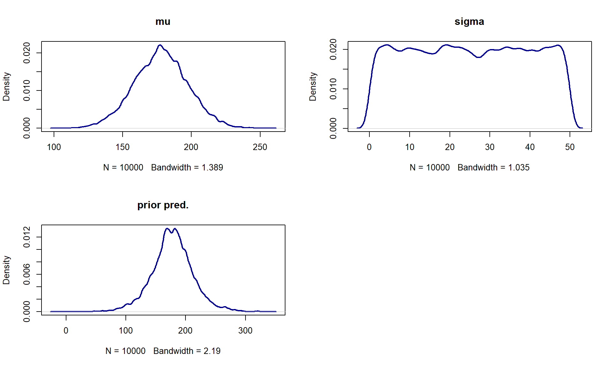
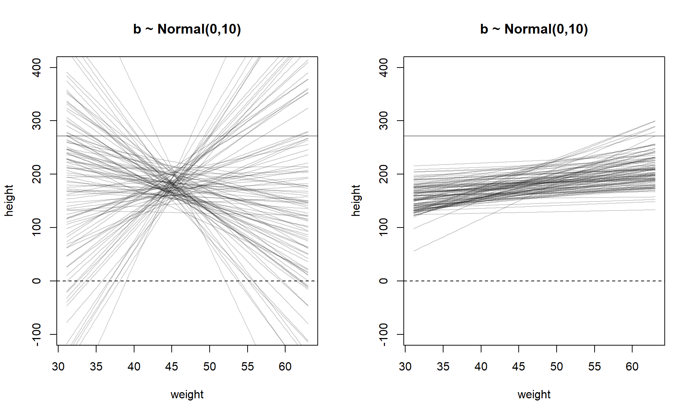
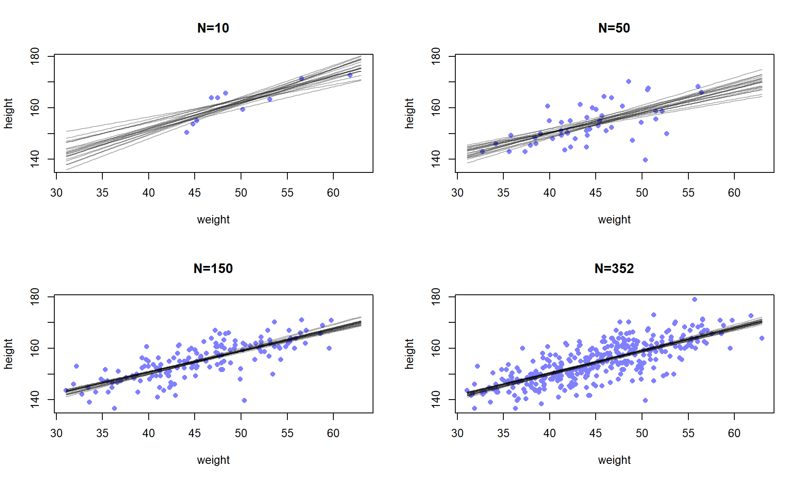
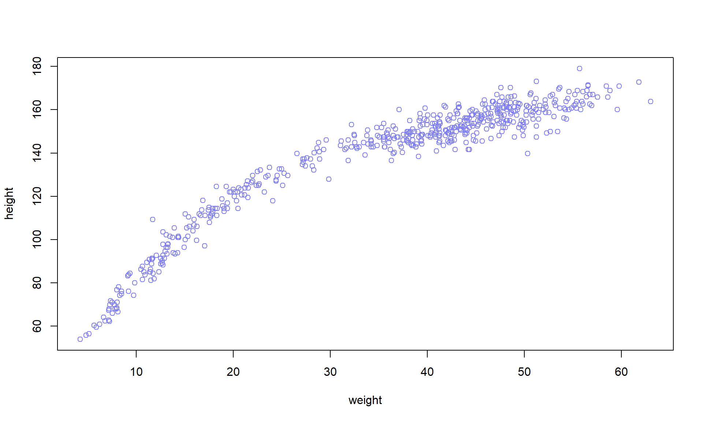

Code
library(rethinking)library(rethinking)pos <- replicate(1e3, sum(runif(16,-1,1)))
dens(pos, lwd=2, col='darkblue')
curve(dnorm(x, 0, sqrt(16*(4/12))), -10,10, add=T, col=2, lwd=2)growth <- replicate(1e3, prod(runif(12,1,1.1)))
dens(growth, col='darkblue', lwd=2)data(Howell1)
d <- Howell1
precis(d) mean sd 5.5% 94.5% histogram
height 138.2635963 27.6024476 81.108550 165.73500 ▁▁▁▁▁▁▁▂▁▇▇▅▁
weight 35.6106176 14.7191782 9.360721 54.50289 ▁▂▃▂▂▂▂▅▇▇▃▂▁
age 29.3443934 20.7468882 1.000000 66.13500 ▇▅▅▃▅▂▂▁▁
male 0.4724265 0.4996986 0.000000 1.00000 ▇▁▁▁▁▁▁▁▁▇d2 <- d[d$age >= 18, ]
hist(d2$height)n <- 1e4
mu <- rnorm(n, 178, 20)
sig <- runif(n,0,50)
prior_pred <- rnorm(n,mu,sig)
par(mfrow=c(2,2))
dens(mu, lwd=2, col='darkblue', main='mu')
dens(sig, lwd=2, col='darkblue', main='sigma')
dens(prior_pred, lwd=2, col='darkblue', main='prior pred.')
par(mfrow=c(1,1))
post <- expand.grid(mu=seq(150, 160, length.out=100),
sig=seq(7, 9, length.out=100))
post$LL <- apply(post, 1, \(x) {
sum(dnorm(d2$height, x[1], x[2], log=T)) + # likelihood
dnorm(x[1], 178, 20, log=T) + dunif(x[2], 0, 50, log=T) #priors
})
# To not get a vector of all zeros (just doing exp(...)), we need to scale by the max
post$prob <- exp(post$LL - max(post$LL))
par(mfrow=c(1,2))
contour_xyz(post$mu, post$sig, post$prob)
image_xyz(post$mu, post$sig, post$prob)par(mfrow=c(1,1))samp <- sample(nrow(post), replace=T, prob=post$prob)
par(mfrow=c(2,2))
with(post[samp,], {
plot(mu, sig, pch=16, asp=1, cex=0.5, col=col.alpha(rangi2,0.1))
dens(mu, adj=0.8)
dens(sig)
})
par(mfrow=c(1,1))
d3 <- sample(d2$height, 20)
post <- expand.grid(mu=seq(150, 160, length.out=100),
sig=seq(7, 9, length.out=100))
post$LL <- apply(post, 1, \(x) {
sum(dnorm(d3, x[1], x[2], log=T)) + # likelihood
dnorm(x[1], 178, 20, log=T) + dunif(x[2], 0, 50, log=T) #priors
})
# To not get a vector of all zeros (just doing exp(...)), we need to scale by the max
post$prob <- exp(post$LL - max(post$LL))
samp <- sample(nrow(post), replace=T, prob=post$prob)
par(mfrow=c(2,2))
with(post[samp,], {
plot(mu, sig, pch=16, asp=1, cex=0.5, col=col.alpha(rangi2,0.1))
dens(mu, adj=0.8)
dens(sig)
})
par(mfrow=c(1,1))# `alist` does not evaluate the code inside, `list` does
flist <- alist(
height ~ dnorm(mu, sigma),
mu ~ dnorm(178, 20),
sigma ~ dunif(0, 50)
)
# can also provide starting values to start the climb at
m4.1 <- quap(flist, data=d2)
precis(m4.1) mean sd 5.5% 94.5%
mu 154.606837 0.4119995 153.948382 155.265291
sigma 7.731424 0.2913946 7.265719 8.197129vcov(m4.1) mu sigma
mu 0.1697435928 0.0002139396
sigma 0.0002139396 0.0849108255post <- extract.samples(m4.1, n=1e4)
# Same as:
post1 <- MASS::mvrnorm(n=1e4, mu=coef(m4.1), Sigma=vcov(m4.1))
head(post) mu sigma
1 155.3939 7.809950
2 155.5758 8.079485
3 154.9783 7.959972
4 153.8172 8.017292
5 154.2051 7.996049
6 155.2383 7.193569d <- Howell1; d2 <- d[d$age >= 18,]
with(d2, plot(weight, height))Introduce a new model for height:
\[\begin{align} h_i &\sim \text{Normal}(\mu_i, \sigma)\\ \mu_i &= \alpha + \beta (x_i - \bar{x})\\ \mu &\sim \text{Normal}(178, 20) \\ \sigma &\sim \text{Uniform}(0,50) \end{align}\]
Let’s simulate some prior predictive checks for the model. We’ll also see what happens if we let \(\beta \sim \text{Log-Normal}(0,1)\) since we know that \(\beta\) should be constrained to be positive.
par(mfrow=c(1,2))
N <- 100 # Number of lines
a <- rnorm(N, 178, 20)
b <- rnorm(N, 0, 10)
plot(NULL, xlim=range(d2$weight), ylim=c(-100, 400), xlab='weight', ylab='height', main='b ~ Normal(0,10)')
abline(h=0, lty=2)
abline(h=272, lty=1, lwd=0.5)
xbar <- mean(d2$weight)
for (i in 1:N) curve(
a[i] + b[i]*(x - xbar),
from=min(d2$weight), to=max(d2$weight), add=T, col=col.alpha('black', 0.2)
)
b <- rlnorm(N, 0, 1)
plot(NULL, xlim=range(d2$weight), ylim=c(-100, 400), xlab='weight', ylab='height', main='b ~ Normal(0,10)')
abline(h=0, lty=2)
abline(h=272, lty=1, lwd=0.5) # World's tallest person is 272
for (i in 1:N) curve(
a[i] + b[i]*(x - xbar),
from=min(d2$weight), to=max(d2$weight), add=T, col=col.alpha('black', 0.2)
)
par(mfrow=c(1,1))Let’s now fit this model using quap:
m4.3 <- quap(alist(
height ~ dnorm(mu, sigma),
mu <- a + b*(weight - xbar),
a ~ dnorm(178, 20),
b ~ dlnorm(0,1),
sigma ~ dunif(0,50)
), data=d2)
precis(m4.3) mean sd 5.5% 94.5%
a 154.6013678 0.27030764 154.1693640 155.0333716
b 0.9032809 0.04192363 0.8362788 0.9702829
sigma 5.0718804 0.19115474 4.7663783 5.3773826vcov(m4.3) |> round(3) a b sigma
a 0.073 0.000 0.000
b 0.000 0.002 0.000
sigma 0.000 0.000 0.037The lack of covariance here is actually do the centering. Refer to exercise at the end of the chapter.
Let’s now build the posterior predictive.
with(d2, plot(weight, height, col=rangi2, pch=16))
post <- extract.samples(m4.3)
a_map <- mean(post$a)
b_map <- mean(post$b)
curve(a_map + b_map*(x-xbar), add=T, lwd=2)That is just the mean. How is the cloud of equally likely regression lines distributed around that mean? Let’s vary the data fed into the model to find out:
plot_post <- function(n){
new_d <- d2[sample(nrow(d2), n), ]
with(new_d, plot(weight, height, col=rangi2, pch=16, xlim=range(d2$weight), ylim=range(d2$height), main=paste0('N=',n)))
m <- quap(alist(
height ~ dnorm(mu, sigma),
mu <- a + b*(weight - xbar),
a ~ dnorm(178, 20),
b ~ dlnorm(0,1),
sigma ~ dunif(0,50)
), data=new_d)
post <- extract.samples(m, 20)
for (i in 1:20) curve(post$a[i] + post$b[i]*(x-xbar), add=T, col=col.alpha('black', 0.3))
}
par(mfrow=c(2,2))
for(j in c(10, 50, 150, 352)) plot_post(j)
par(mfrow=c(1,1))We can use the link function, which is basically rstanarm’s posterior_linpred. We can also feed new data into it to get:
weight_seq <- seq(25,70)
mu <- link(m4.3, data=data.frame(weight=weight_seq))
par(mfrow=c(1,2))
with(d2, plot(weight, height, type='n'))
for(i in 1:100) points(weight_seq, mu[i,], pch=16, col=col.alpha(rangi2,0.1))
with(d2, plot(weight, height, col=rangi2))
lines(weight_seq, colMeans(mu))
shade(apply(mu, 2, PI, prob=0.89), weight_seq)par(mfrow=c(1,1))Great, we have the posterior predictive distribution for the mean. But we need the prediction interval. This is what is actually “reproducing” the data. Everyone is always so concerned with the mean, but if we only look at the mean, we will fail. We can use the sim function to simulate from the Gaussian distribution of height:
sim_height <- sim(m4.3, data=data.frame(weight=weight_seq))
plot(height ~ weight, data=d2, col=col.alpha(rangi2,0.5))
lines(weight_seq, colMeans(mu))
shade(apply(mu, 2, PI, 0.89), weight_seq)
shade(apply(sim_height, 2, PI, 0.89), weight_seq)There are two types of uncertainty we have encountered so far: parameter and sampling. The parameter uncertainty is from the model and how inference is done. The sampling (Gaussian noise here) is how the data is “replicated”. If we add more parameters to the model and better model the actual process that generates the models, our sampling uncertainty will decrease.
We will start will polynomial regression. Two key differences here is that the \(x\)’s are now standardized, and we are going to consider the full dataset. Not just the adults.
d <- Howell1
d$weight_s <- (d$weight - mean(d$weight))/sd(d$weight)
d$weight_s2 <- d$weight_s^2
plot(height ~ weight, data=d, col=rangi2)
The model is defined below:
\[\begin{align} h_i &\sim \text{Normal}(\mu_i, \sigma)\\ \mu_i &= \alpha + \beta_1 (x_i) + \beta_2 (x_i)\\ \beta_1 &\sim \text{Log-Normal}(0,1) \\ \beta_2 &\sim \text{Normal}(0, 1) \\ \alpha &\sim \text{Normal}(178, 20) \\ \sigma &\sim \text{Uniform}(0,50) \end{align}\]
We fit as usual:
m4.5 <- quap(alist(
height ~ dnorm(mu, sigma),
mu <- a + b1*weight_s + b2*weight_s2,
a ~ dnorm(178, 20),
b1 ~ dlnorm(0,1),
b2 ~ dnorm(0,1),
sigma ~ dunif(0,50)
), data=d)
precis(m4.5) mean sd 5.5% 94.5%
a 146.057315 0.3689737 145.467623 146.647006
b1 21.733025 0.2888870 21.271327 22.194722
b2 -7.803156 0.2741830 -8.241354 -7.364959
sigma 5.774436 0.1764623 5.492416 6.056457The parameters are no longer interpretable in the same way. We still might want to interpret \(\alpha\) as the average value of height when the data takes the average, but this is no longer true. Look at footnote 76 for more context.
For completeness, let’s graph the posterior predictive of the mean and response.
ws_seq <- seq(-3,2,length.out=500)
new_d <- list(weight_s=ws_seq, weight_s2=ws_seq^2)
mu <- link(m4.5, data=new_d)
height_sim <- sim(m4.5, data=new_d)
plot(height ~ weight, data=d, col=col.alpha(rangi2, 0.3), pch=16)
mu |> apply(2, PI, .89) |> shade(ws_seq*sd(d$weight) + mean(d$weight))
height_sim |> apply(2, PI, .89) |> shade(ws_seq*sd(d$weight) + mean(d$weight))We also are not equipped with any way to say whether one model is better than another. Is the linear better than the quadratic? What about a cubic? Answers will come in chapter 7.
For our splines we are going to be using cherry blossom data
data(cherry_blossoms)
d <- cherry_blossoms
plot(doy ~ year, data=d, col=rangi2)Let’s choose 15 knots for our spline. We are also going to let R create a basis for a cubic spline (degree 3) with the 15 knots.
d2 <- d[!is.na(d$doy), ]
num_knots <- 15
knot_list <- quantile(d2$year, probs=seq(0,1,length.out=num_knots))
library(splines)
B <- bs(
d2$year, knots=knot_list[-c(1,num_knots)], degree=3,intercept=T
)
plot(NULL, xlim=range(d2$year), ylim=c(0,1), xlab='year', ylab='basis')
for(i in 1:ncol(B)) lines(d2$year, B[,i])The model now takes the following form:
\[\begin{align} D_i &\sim \text{Normal}(\mu_i, \sigma)\\ \mu_i &= \alpha + \sum_{k=1}^K w_k B_{k,i}\\ \alpha &\sim \text{Normal}(100, 10) \\ w_j &\sim \text{Normal}(0,10)\\ \sigma &\sim \text{Exponential}(1) \end{align}\]
We will use matrix multiplication to fit this in quap
m4.7 <- quap(alist(
D ~ dnorm(mu, sigma),
mu <- a + B %*% w,
a ~ dnorm(100, 10),
w ~ dnorm(0,10),
sigma ~ dexp(1)
),
data = list(D=d2$doy, B=B),
start = list(w=rep(0,ncol(B)))
)Let’s finally plot the posterior:
post <- extract.samples(m4.7)
w <- apply(post$w, 2, mean)
par(mfrow=c(2,1))
plot(NULL, xlim=range(d2$year), ylim=c(-6,6), xlab='year', ylab='basis * weight')
for(i in 1:ncol(B)) lines(d2$year, w[i]*B[,i])
mu <- link(m4.7)
plot(d2$year, d2$doy, pch=16, col=col.alpha(rangi2,0.3))
mu |> apply(2,PI,.89) |> shade(d2$year, col=col.alpha('black', 0.5))par(mfrow=c(1,1))For the model:
\[\begin{align} y_i &\sim \text{Normal}(\mu, \sigma)\\ \mu &\sim \text{Normal}(0,10)\\ \sigma &\sim \text{Exponential}(1) \end{align}\]
Generate values for the prior predictive
n <- 1e4
mu <- rnorm(n,0,10)
sig <- rexp(n,1)
y_prior_pred <- rnorm(n,mu,sig)
hist(y_prior_pred)Translate the above model to quap notation:
y ~ dnorm(mu, sigma),
mu ~ dnorm(0,10),
sigma ~ dexp(1)Translate the following quap model:
y ~ dnorm(mu, sigma),
mu <- a + b*x,
a ~ dnorm(0, 10),
b ~ dunif(0, 1),
sigma ~ dexp(1)into math notation:
\[\begin{align} y_i &\sim \text{Normal}(\mu, \sigma)\\ \mu &= \alpha + \beta x_i\\ \alpha &\sim \text{Normal}(0,10)\\ \beta &\sim \text{U}(0,1)\\ \sigma &\sim \text{Exponential}(1) \end{align}\]
Let \(y\) be height and \(x\) be the year. I’m going to set the average at 173cm, and say that on average kids grow 4 inches a year (10 cm). I plead ignorance on \(\sigma\), but exponential is a good choice.:
\[\begin{align} y_i &\sim \text{Normal}(\mu, \sigma)\\ \mu &= \alpha + \beta x_i\\ \alpha &\sim \text{Normal}(173,20)\\ \beta &\sim \text{Normal}(10,4)\\ \sigma &\sim \text{Exponential}(1) \end{align}\]
Oh but heck, you’re right! Kids can’t shrink unless you’re Rick Moranis! I’ll change it so the mean of the Log-Normal is still 10cm though.
\[\begin{align} y_i &\sim \text{Normal}(\mu, \sigma)\\ \mu &= \alpha + \beta x_i\\ \alpha &\sim \text{Normal}(173,20)\\ \beta &\sim \text{Log-Normal}(1.8,1)\\ \sigma &\sim \text{Exponential}(1) \end{align}\]
Oh good call, the variance is never more than 64, which means the standard deviation is never more than 8. Let’s find the mean value of the exponential that will place no more than 0.01 mass of the probability above 8. We can do this by inverting the CDF:
lam <- -log(1-0.99)/8
qexp(0.99, rate=lam)[1] 8lam |> round(2)[1] 0.58Let’s sub it in to get: \[\begin{align} y_i &\sim \text{Normal}(\mu, \sigma)\\ \mu &= \alpha + \beta x_i\\ \alpha &\sim \text{Normal}(173,20)\\ \beta &\sim \text{Log-Normal}(1.8,1)\\ \sigma &\sim \text{Exponential}(0.58) \end{align}\]
Refit m4.3, but omit the mean weight.
data(Howell1)
d <- Howell1; d2 <- d[d$age >= 18,]
xbar <- mean(d2$weight)
m4.3 <- quap(alist(
height ~ dnorm(mu, sigma),
mu <- a + b*(weight - xbar),
a ~ dnorm(178, 20),
b ~ dlnorm(0,1),
sigma ~ dunif(0,50)
), data=d2)
m4.3_1 <- quap(alist(
height ~ dnorm(mu, sigma),
mu <- a + b*(weight),
a ~ dnorm(178, 20),
b ~ dlnorm(0,1),
sigma ~ dunif(0,50)
), data=d2)
vcov(m4.3) a b sigma
a 7.306632e-02 -4.245578e-08 6.156271e-05
b -4.245578e-08 1.757593e-03 -2.519510e-05
sigma 6.156271e-05 -2.519510e-05 3.654026e-02vcov(m4.3_1) a b sigma
a 3.601394419 -0.0784367416 0.0093498685
b -0.078436742 0.0017437052 -0.0002041314
sigma 0.009349869 -0.0002041314 0.0365749626Woah, what the heck! Looks like the variance for \(\beta\) and \(\sigma\) are the same but \(\alpha\) isn’t. Also, we have some covariances now! Let’s look at the posterior predictive:
weight_seq <- seq(25,70)
mu <- link(m4.3, data=data.frame(weight=weight_seq))
par(mfrow=c(2,2))
with(d2, plot(weight, height, type='n'))
for(i in 1:100) points(weight_seq, mu[i,], pch=16, col=col.alpha(rangi2,0.1))
with(d2, plot(weight, height, col=rangi2))
lines(weight_seq, colMeans(mu))
shade(apply(mu, 2, PI, prob=0.89), weight_seq)
mu <- link(m4.3_1, data=data.frame(weight=weight_seq))
with(d2, plot(weight, height, type='n'))
for(i in 1:100) points(weight_seq, mu[i,], pch=16, col=col.alpha(rangi2,0.1))
with(d2, plot(weight, height, col=rangi2))
lines(weight_seq, colMeans(mu))
shade(apply(mu, 2, PI, prob=0.89), weight_seq)Looks the same to me! Must be that the new terms in our covariance matrix are able to capture something extra…
Use m4.3 from above to make predictions.
new_weights <- c(46.95, 43.72, 64.78, 32.59, 54.63)
mu <- link(m4.3, data=data.frame(weight=new_weights))
# Expected heights:
colMeans(mu)[1] 156.3724 153.4616 172.4403 143.4316 163.2934# Intervals
apply(mu, 2, PI, 0.89) [,1] [,2] [,3] [,4] [,5]
5% 155.9131 153.0317 170.9950 142.4760 162.4648
94% 156.8399 153.9302 173.8431 144.3336 164.0867Use ages below 18. #### a
d3 <- Howell1[Howell1$age < 18, ]
xbar <- d3$weight |> mean()
m_h2 <- quap(alist(
height ~ dnorm(mu, sigma),
mu <- a + b*(weight - xbar),
a ~ dnorm(178, 20),
b ~ dnorm(0,1),
sigma ~ dunif(0,50)
), data=d3)
precis(m_h2) mean sd 5.5% 94.5%
a 108.383396 0.60872110 107.410543 109.356250
b 2.707459 0.06815384 2.598536 2.816382
sigma 8.438103 0.43070678 7.749750 9.126455For a child at the average weight, we would expect the average height to be 108.38 cm (\(\alpha\)). A 10 unit increase in weight would result in a 27.1 cm increase in height (\(\beta\)).
weight_seq <- seq(3, 45, length.out=1e3)
mu <- link(m_h2, data=data.frame(weight=weight_seq))
sim_height <- sim(m_h2, data=data.frame(weight=weight_seq))
plot(height ~ weight, data=d3, col=col.alpha(rangi2,0.5))
lines(weight_seq, colMeans(mu))
shade(apply(mu, 2, PI, 0.89), weight_seq)
shade(apply(sim_height, 2, PI, 0.89), weight_seq)The model is doing poor at the extremes. A spline or quadratic term could fix this.
Same model as above, except use log weight for covariate. Use entire data
d <- Howell1
d$l_weight <- log(d$weight)
xbar <- d$l_weight |> mean()
m_h3 <- quap(alist(
height ~ dnorm(mu, sigma),
mu <- a + b*(l_weight - xbar),
a ~ dnorm(178, 20),
b ~ dlnorm(0,1),
sigma ~ dunif(0,50)
), data=d)
precis(m_h3) mean sd 5.5% 94.5%
a 138.268402 0.2201399 137.916576 138.620228
b 47.070903 0.3826386 46.459373 47.682434
sigma 5.134808 0.1556764 4.886007 5.383608\(\alpha\) can be interpreted as the value for when log weight is the average. A little harder, but doable. The coefficient for \(\beta\) is no longer for a linear increase in weight, it is a linear increase log weight. So for each order of magnitude-ish (natural not base 10) increase we get a 47.07 increase in height.
Same plot as H.2 b.
weight_seq <- seq(1.4, 4.2, length.out=1e3)
mu <- link(m_h3, data=data.frame(l_weight=weight_seq))
sim_height <- sim(m_h3, data=data.frame(l_weight=weight_seq))
plot(height ~ weight, data=d, col=col.alpha(rangi2,0.5))
lines(weight_seq |> exp(), colMeans(mu))
shade(apply(mu, 2, PI, 0.97), weight_seq |> exp())
shade(apply(sim_height, 2, PI, 0.97), weight_seq |> exp())